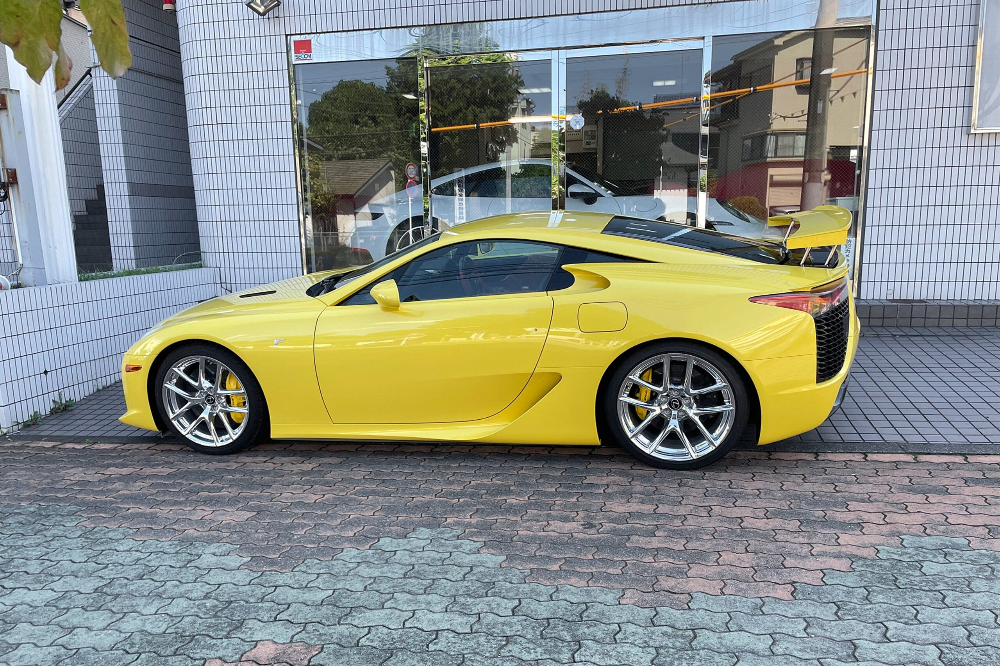
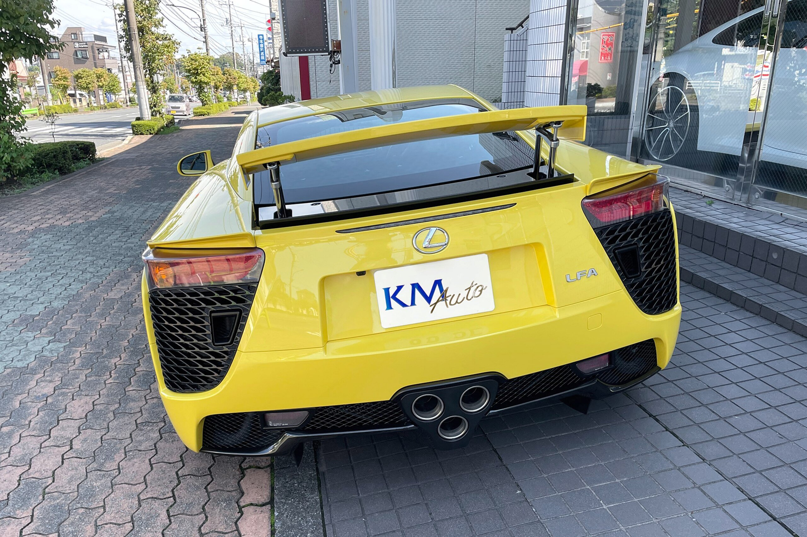
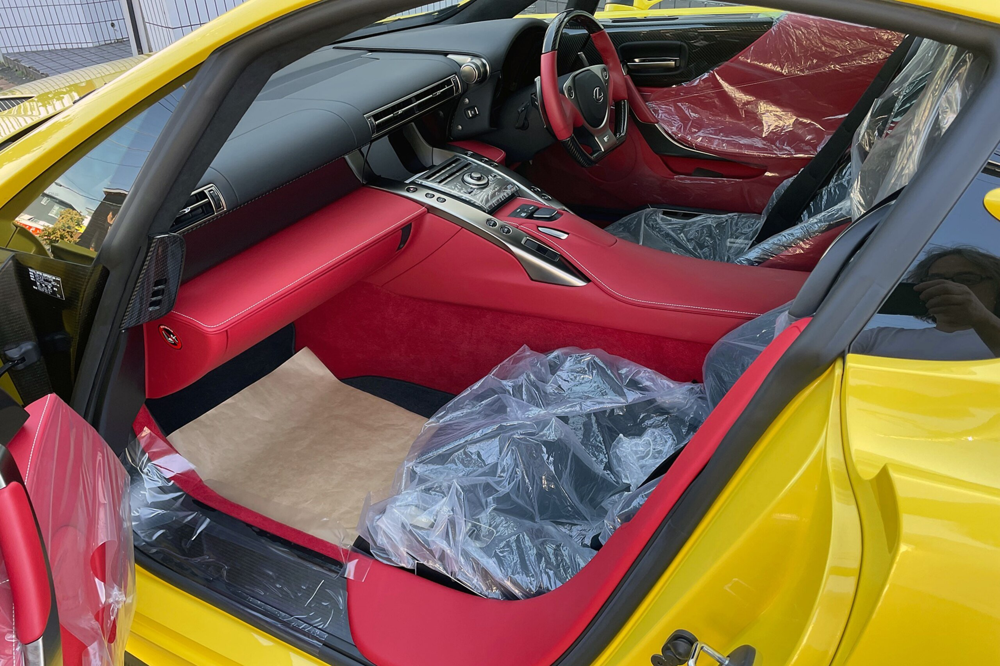
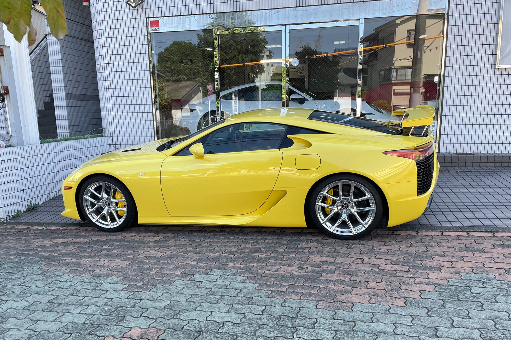
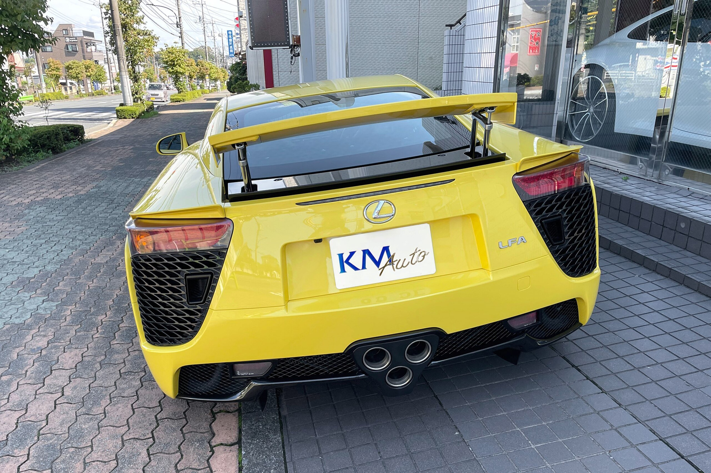
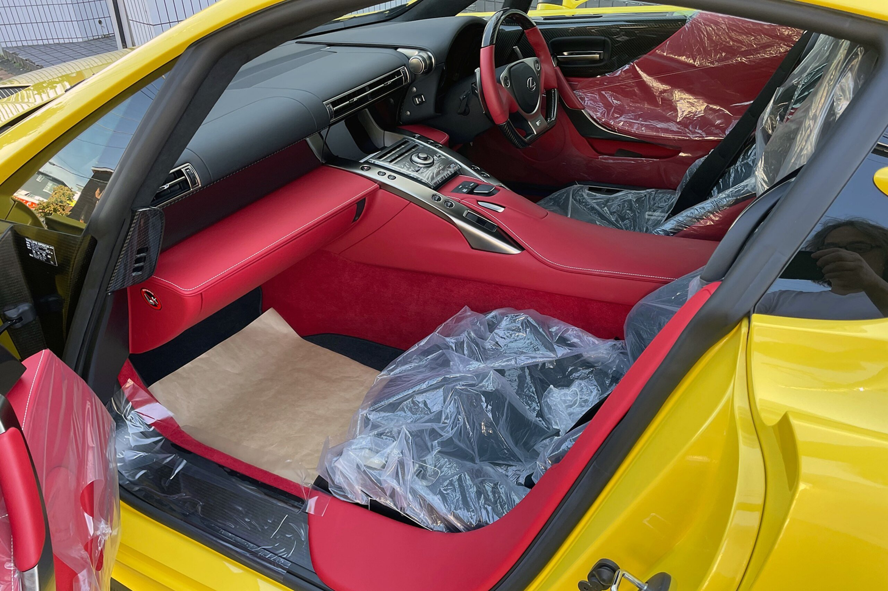

Lexus LFA V10 4.8
€1.000.000
Especificações
| Ano: | 2011 |
| Quilómetros: | 20.000 km |
| Combustível: | Gasolina |
| Transmissão: | Sequencial 6 vel. |
| Potência: | 560 cv @ 8.700 rpm |
| Motor: | V10 4.8L atmosférico |
| 0-100 km/h: | 3.7 segundos |
| Vmax: | 325 km/h |
| Cor: | Amarelo |
Equipamento
- Chassis em fibra de carbono
- Motor V10 atmosférico exclusivo
- Escape titânio com som único
- Interior em pele e Alcantara
- Painel digital TFT premium
- Sistema de som Mark Levinson
- Travões carbono-cerâmicos
- Jantes forjadas BBS
Descrição
Lexus LFA — uma das raridades automóveis mais exclusivas do século XXI. Produzido entre 2010 e 2012, apenas 500 unidades foram fabricadas, tornando cada LFA numa verdadeira obra de arte mecânica. O motor V10 de 4.8L atmosférico, desenvolvido em parceria com a Yamaha, é considerado um dos melhores motores já criados, com um som que rivaliza com os melhores Ferrari. Com chassis em fibra de carbono e tecnologia de Fórmula 1, o LFA oferece uma experiência de condução incomparável.
Este exemplar está em estado de concurso, com apenas 20.000 km e histórico completo da marca. Todas as revisões foram efetuadas na rede oficial Lexus. Documentação original completa, incluindo certificado de autenticidade e livro de manutenção carimbado. Uma oportunidade única para colecionadores e entusiastas. Venda apenas a compradores sérios com possibilidade de visualização mediante marcação.